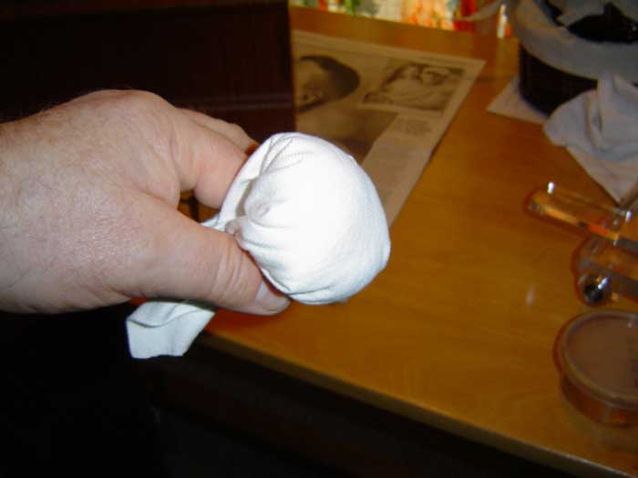

THE NEEDLEBAR
Restoration Section
RESTORATION – THOUGHTS FROM THE FENMAN
Chapter 4 – OUR FIRST RESTORATION
Continued........
STEP FIVE – SANDING –
CHECKING FOR UNDERSTANDING – I’ll be using the expression “sandpaper” because I suspect that most of our readers will be American. As I mentioned earlier when I was talking about screws, our good buddies in the land of dollars and sense tend to use broad-brush expressions, i.e., “setscrew” meaning any one of a whole range of fixings, and will tend to call any one of the thousands of available sheet-abrasives “sandpaper”, whilst British woodworkers tend to be somewhat more specific in describing the product they’re using and will rarely, if ever, use that expression – but they know what it means.
And the trivia question is – when was paper coated with sand as the abrasive last sold commercially in Britain? The answer, believe it or not, is that it was never made or sold commercially in this country! Many abrasives have been used, but sand was never one of them. So why do we call it sanding? Search me!
I tend to use cloth-backed aluminium oxide abrasives for most of my work – usually the type marketed as “J flex”. It’s vastly superior to the old glass-paper that seems to have been around since Pontius was a pilot: it doesn’t clog-up so easily and it remains sharp for a very long time. The downside is that it’s expensive. I buy it in 4- inch (100mm) wide rolls and it costs around 2 UK pounds a metre. The good news is that you don’t have to buy a 50-metre roll - you can buy it by the metre, and one metre will do an awful lot of work.
If you can’t get J flex, don’t worry – any reasonably soft, cloth-backed abrasive will be OK, but try to avoid paper-backed products or the industrial ones backed with rigid fabric. They have their uses – but this isn’t one of them. Paper-backed abrasives are mainly used on flat surfaces and can cause unnecessary scratches when used on curves. Having got that clear – it’s “sandpaper” from now on, guys!
We’re going to be sanding two sorts of surfaces: flat ones and curved ones. When we sand the flat surfaces, we’ll wrap the sandpaper around a flat piece of wood for a backing, whilst when we sand the curves, we’ll use our hand for a backing. If we DON’T use a block on the flat surfaces, we’ll tend to sand them into curves. If we DO use a block or the curved surfaces, we’ll tend to sand them flat. Get it?
Oh no! I’m as bald as a badger’s backside! Note that in the picture, I’m using a flat block to back the sandpaper, because I’m sanding a flat surface. This is actually a proper, cork-faced sanding block, but any really flat object will do.
You’ll notice I’m wearing a mask. This is for two reasons: to stop me inhaling wood dust and to prevent my bank manager from recognising me. We’re only going to be sanding this very, very gently indeed, as I’m trying to avoid going through any patina that the wood’s acquired, but we’ll still produce a small amount of wood dust. Inhaling any sort of wood dust ain’t good for you: inhaling the dust from tropical hard woods REALLY ain’t good for you, and can induce nasty respiratory problems! Wear a dust mask!
I’m sanding with 320 or 400 grit sandpaper just sufficiently to get the surface really smooth and to remove the slightly glazed effect left by the stripping process.
NOTE – ALWAYS SAND IN THE DIRECTION OF THE WOOD GRAIN. THERE ARE ABSOLUTELY NO EXCEPTIONS TO THIS RULE - EVER.

Here I’m sanding a curve, so I’ve folded the sandpaper double and am using my thumb as the backing as I stroke the sandpaper over the curves, And before you all start jumping up and down, shouting “he hasn’t got a mask on!” - that orange electrical cable behind my left hand is running to the thing that you can’t see and most likely haven’t got where you’re working - a filthy great big 0.5 micron filtered dust-extraction unit hanging from the ceiling that’s nearly sucking my shirt off! You just make sure you’re wearing your masks!
Once I’d finished the sanding (took me about five minutes or so), I gave the whole cover a wipe over with a soft brush and then a clean rag to get rid of the dust, and then retired, with the cover, to the house – we’ve finished the dirty part of the job now, and I want to get away from the dusty environment to a very clean one.
DUST FREE –
NOTE – From this point onwards, we will need to be in a very clean and dust-free environment. There’s very little smell from the shellac, so I’d strongly suggest that you do this in the house. Any dust at all could spoil your work.
Although I carefully wiped all the dust off the cover before I left the workshop, it still isn’t clean enough, so I’m now going to wipe it all over with a tack-cloth (tack-rag). These are readily available from the companies selling wood finishes, but if you have problems getting one, you can make your own thus –
Take a piece of soft cotton cloth, soak it in water and ring it out to dryness. Now sprinkle a little white spirits (mineral spirits) onto it and rub the cloth hard onto itself so that you end up with it distributed all through the cloth. Now do the same with some linseed oil; sprinkle a little on and rub it until it’s distributed right through the cloth. It’s now ready to use. The bought ones do actually feel tacky, whilst the homemade ones do not – but they still work OK. Whether you bought it or made it, wrap it in a plastic bag or place it in a small, airtight jar when you’re not using it and it will keep for quite a long time (I used one for this job that I’d made about six or eight weeks before, and it was fine).
Wipe over the whole of the surface with your tack-cloth very lightly – don’t apply any pressure. Do this as much as possible in the direction of the grain.
We are now going to begin the very satisfying process of applying a new finish – and will then perform secret and mystical rites that will ensure that it doesn’t look as though it’s brand new. We will do these using materials that are substantially the same as the originals and above all, we will not do anything that’s not reversible.
OILING THE WOOD –
The first thing we’re going to apply is a coat of raw linseed oil. Wipe it on fairly liberally with a cloth. After a couple of minutes or so, take a close look at it. In some places, the surface may look dry again, ‘cos the stuff’s soaking in, whilst in other places, it just sits on the surface, smiling back at you. This uneven absorption – or lack of absorption – often happens and is not a problem – just give it another fairly liberal coat of the stuff straight away. Now let it stand for about 15 minutes, during which time it will almost certainly be absorbed unevenly – but don’t worry - just leave it alone. At the end of this period, wipe all the excess oil off the surface with a clean cloth.
It should now look something like this. Very pleasing!
Two items posing a very real danger of spontaneous combustion now confront us. The first is the linseed oil soaked rags and the second is Linda when she sees this photograph and realises that I was doing this on her SuperQuilter table while she was out!
SERIOUS SAFETY WARNING – Rags soaked in linseed, tung or any of the other oils used by woodworkers can – and often do – burst into flames of their own accord, sometimes many hours after use. Don’t leave them lying around and don’t throw them into a bin. Either burn them yourself somewhere safe, or if you can’t do that, wash them out well and spread them out flat to dry before disposing of them. You’ve been warned!
Let the case now stand for at least 24 hours and then buff it all over, quite firmly, with a clean cloth. (If you ever, for any reason, use pure tung oil instead of linseed oil, let it stand for about four days before buffing).
A HAVEN FOR THE FAINT HEARTED –
The next stage is applying the shellac and cannot exactly be described as “dead simple”. Most people will, with a little bit of care and concentration, manage it just fine, but there will be someone among you right now who is conscious of not being the most “handy” person in the world – you wouldn’t describe yourself as “dextrous” - not born to perform card tricks – you are to hand crafts what someone with two left feet is to dancing – no-one ever lets you hold their baby - you’re cack-handed (another fenland expression).
If this is a good description of you, don’t despair – all is not lost! Read the rest of the article, and if you then think, “I can do that!” then go for it, but if you feel the colour draining from your face and really don’t have any confidence whatsoever in your ability to do it, then simply apply a couple of coats of a good quality furniture wax polish (real wax polish - not aerosol!) at this stage and buff it to a nice sheen. Job done! Finito Benito! End of story! It’s not exactly authentic, but it looks nice and, more importantly, it’s reversible if someone in the future wants to do the proper job.
If, however, you’re confident that you have a modicum of dexterity, press on.
FOR THE (REASONABLY) STOUT HEARTED – APPLYING SHELLAC -
Please read the next section several times and be sure you fully understand it before proceeding. It’s not rocket science; it’s not particularly difficult; but you do need to have it clear in your mind before you start.
The thing that makes the application of shellac a little tricky is the speed at which it dries – instant! (A slight exaggeration – but we’re talking seconds rather than minutes). This means that the luxuries one enjoys with paint, like being able to brush it out until it looks nice, don’t apply with shellac, so we have to use a totally different technique for applying it. Don’t be frightened – this is going to sound a lot more difficult than it actually is: but if you’re at all nervous, practice first on a piece of scrap plywood, MDF (fibreboard) or similar. If you really do make a total pigs-ear of it, you can always get the stripper out and start again, heart breaking though that would be!
The first thing we have to do is to make a “fad” or “fadder” (and there were you thinking that a “fadder” was an Irish Catholic priest). For this, you’ll need a piece of reasonably fine, white cotton cloth about 6 inches (150mm) square. Now before the French polishing purist among you starts jumping up and down, shouting “you make a fad out of upholstery wadding” let me remind you of what I said before – we ain’t French polishing – we’re faking an old shellac finish. Trust me and do as I say! You also need some cotton wool.
CHECKING FOR UNDERSTANDING – Cotton wool - I’m sure the American contingent has a different name for this – and I can’t remember what it is – but I’m sure you’ll recognise it from the picture. It’s the stuff you ladies wipe your make-up off or dry a baby’s bottom with.

Place the cotton wool in the middle of the fad, as above. We are now ready to “charge” the fad. To do this, we need some French polish.
I’m using the type of French polish known as “button polish” which is eminently suitable for all sewing machines until we get onto the teak-effect ones of the late 1950’s – which need something a little lighter. If the bottle you find in the shops is just labelled “French Polish” and the stuff in it is a dark brown colour – it’ll be button polish, but if it’s labelled something like “Dark French Polish” – it’ll be too dark.
Shake the bottle very well. You may be able to see solids that have settled in the bottom of the bottle: keep shaking until these have all dissolved again. We charge the fad by pouring shellac into the cotton wool thus –
The picture above is slightly deceptive in that it was taken after I’d actually been using the fad for a while, so it looks as though it’s awash with shellac (you can, by the way, see the colour of the button polish very well here). Don’t overdo it; just pour it on until there looks to be a reasonable amount soaked into the cotton wool. Note – if you make the fad too big, you’ll use up a bottle of shellac just charging it! Keep the fad reasonably small – when you gather the edges of the cloth together, it should (for this particular job) be no bigger than a golf ball –

Pour a small depth of shellac into a small dish (I used the one that you can see in the bottom right-hand corner of the above picture), dip the fad into it and scrape-off the surplus shellac quite firmly on the edge of the dish. Now press the face of the fad against a piece of clean paper (the stuff you use in your printer is ideal). This is to distribute the shellac evenly in the fad, but also to ensure that the fad isn’t too heavily charged. The fad should leave an evenly coloured, light brown mark on the paper. If parts of the mark are much darker than the rest, there’s too much shellac on the fad, so scrape it off hard against the rim of the dish again.
We are going to apply the shellac very thinly indeed. As we wipe the fad across the wood, we will be looking to leave a stripe of wetness with very little shellac in it. An analogy would be to imagine wetting a piece of cloth with water and then wringing it out just as hard as you possibly can, until it barely feels damp at all, then wiping it across a piece of glass – it would leave a wet mark which would have so little water in it that it would evaporate away in seconds.
Initially, the wood may soak-up the shellac, so we’re going to apply about three coats (the exact number of coats is never critical at any stage of this process) working as much as possible in the direction of the grain and with each stroke JUST overlapping the previous one.
There will be one or two places where we can’t go with the grain –
That corner is as awkward as can be – but we’ve got to get it – so I’m pushing a bit of the fad into it with the tip of my finger and wiping across the grain before quickly going back along the same bit doing short wipes in the same direction as the grain. Look closely to make sure you’ve got it right into the corner if your cover’s got a tricky bit like this.
You will notice I’m doing this without any sort of hand protection, so I’ll get shellac and alcohol on my skin. I’ve never seen anyone, amateur or professional, ever try to do this job whilst wearing gloves, nor do they use any sort of barrier cream on their skin, because there must be no greasiness there whatsoever (I wash my hands every few minutes when I’m doing this sort of work, simply to keep the skin’s natural oils at bay). When I’ve finished, I’ll have beautiful, brown, shiny fingertips and it’ll take the stuff a couple of days to wear off again. I’ve never heard of anyone suffering any harmful effects from this, but because of the litigious society in which we are doomed to abide, where going to the toilet or blowing our noses is covered by a sub-section of some Health and Safety legislation, I’m hereby going on record as telling you that you should be taking appropriate Health and Safety precautions. You’ll end up with a lousy finish on your sewing machine cover but you’ll make some over-paid, self-righteous wimp in a pinstriped suit feel very important.
Just as when we were stripping, we will shellac the cover in definite “bits” – these again being the top, the two sides and the two ends – five “bits”. With newspaper on the table, I did the whole of the top first, to about halfway round the big curve. I then went straight onto one of the sides, tilting the cover so as to be able to get at it more easily but keeping at least one corner resting on the table for stability. Note that the grain is vertical on the sides and ends, so my strokes with the fad were also vertical.
IMPORTANT NOTE – watch those corners! It’s very easy to scrape shellac off the fad on corners, thus getting a horrible run on the adjacent side. Work outwards, from the middle towards the edges - not from the outside into the middle. This is exactly the precaution you’d take if you were painting, but here, your mistakes will have dried and hardened in seconds! Also watch out when you stroke off the edge of the wood with the fad – it’s very easy to end up leaving a small deposit at the very end of the stroke. If that happens, stroke it off again IMMEDIATELY, before it sets.
Having finished the side, I turned the cover and continued straight onto the first end – then the other side and finally the other end – fading with my right hand and holding the cover at a convenient angle against the table with my left (I’m right handed). By the time I was doing the last end, and therefore needing to hold the cover by a side that had been faded, the shellac on that side was perfectly dry – it really does dry fully in a matter of seconds, with no tackiness.
As soon as the first coat is on,
go straight into the second coat – and then a third – you don’t
need to give any time between coats. Use a reasonable pressure on the fad
in steady, deliberate strokes and as soon as it starts to leave streaks that
look a bit too dry, or it starts to drag, dip it in the dish again, remembering
to wipe it off well on the dish side and press it against the paper again.
Having got three (or so) coats on, we’ll let it sit for about 15 minutes,
to give the wood an opportunity to draw the shellac into its pores somewhat,
if it so wishes. During this time, put the lid back on the dish and wrap your
fad tightly in a plastic bag to stop it drying out.
We’re now going to rub over the surface very lightly indeed with 0000 wire wool, mainly to make sure that there’s no little bits of anything sticking up from the surface, dust off gently with our tack-cloth and wipe the next couple of coats on in a smallish figure-of-eight motion. Try to imagine each of these eights being very long and thin, much like taking an elastic band, twisting it once to form a figure-of-eight and than stretching it gently, such that the sides of each loop are touching each other, or better still with the shellac, very slightly overlapping each other.
On each part of the cover, do a series of little figure-of-eights all around the edge first (each figure being probably about an inch or two long), and then do the middle - this is simply to ensure that we don’t miss any of the edges. Go over the whole cover a couple of times in this way.
Without stopping, give it a couple more coats with the figures-of-eight somewhat longer and then give it four or five coats just using straight strokes again. If at any time you see that you’ve missed a bit, it’s usually better to leave it rather than go back – the next coat will get it.
Always try to use nice long strokes, but in places, that isn’t practical. On the sides of the Vesta cover there’s those long horizontal “humps” just below the top, and a step a couple of inches from the bottom, and if I’d tried to go over those in one long stroke, the shellac wouldn’t have gone on very evenly. One side of the “hump” would have scraped a lot of shellac out of the fad whilst the other side wouldn’t have got much at all, because of the impossibility of applying an equal pressure throughout the stroke. I therefore used a series of different strokes on each side, wiping up-hill from either side of the “hump”, and then giving a little wipe over the “summit”. I treated the step in a similar way, wiping into it with short strokes from both directions.
The main thing is to LOOK at the results of your work, and if something’s not going quite right, don’t keep doing the same thing with each successive coat – try a slightly different approach.
Well, it’s time to put the kettle on, guys and gals! Pour the shellac out of the dish back into the bottle and wrap the fadder tightly in its plastic bag – we’re not going to do anything else for at least the next 24 hours, to give the shellac a chance to harden. So how many coats have we put on? I’ve lost count, but it must be around a dozen or so in total – it really doesn’t matter either way.
At this stage, your cover should be looking something like this -
Linda’s really going to skin me when she sees I did all this on her SuperQuilter table while she was out teaching! Kinda shiny, ain’t it? That finish would be very pleasing if we were building a concert piano, but we’re not – so 24 hours from now, that gloss is coming off again!
OK, guys and gals, having had a 24-hour break, were going to press on. We really are on the home straight now.
The opposite of a gloss surface is a “flat” one (a bit of jargon creeping in there). We’re going to start by “flatting” the cover and we do this simply by rubbing the surface all over with 0000 wire wool, until the gloss has gone (just gone, that is – don’t rub all the shellac off again!) and it looks like this –

Two things you need to be using here to examine the surface are your eyes and your fingertips. Anyone who spends their time doing very fine, precision work will support me in saying that you can actually see more with your fingers than you can with your eyes. The human finger can easily feel an irregularity of less than one twentieth of a thousandth of an inch, and sure as the Pope’s a Catholic, you can’t see that with your eyes!
Look at the flatted finish to make sure that you haven’t missed any bits – the “degree” of flatting should be even over the whole cover. Now feel the surface with your fingers to see if there are any ridges etc. So why are we bothered about them if the eye can’t see them? Well, you can’t see them at the moment, but we’re now going to put the “65 year old” sheen onto the surface, and they will then become visible again because of the uneven reflection of the light that they would cause. I have purposely left the original “dings” and “scrawks” (fen-speak) in the surface of the wood, partly because to get rid of them would have meant sanding through the patina, but more because they actually add to the authenticity of a 65-year-old item. They will look fine when the finish is completed because they’ll look like they SHOULD be there, but a run or ridge in the shellac will be an immediate give-away that this piece has been restored, so rub them out now, then wipe the surface gently with your tack-cloth.
Having satisfied yourself that the surface is good, we now apply about three more coats of shellac with our fadder – straight strokes – no pause between coats.
We are now going to “stiff” the surface (don’t blame me! I didn’t dream these terms up!). To do this, we add a little methylated spirits (de-natured alcohol) to some of the polish in our dish – no more than about one part alcohol to about four parts French polish – and, using a new fad – not charged, just dipped and well scraped off on the edge of the dish – apply one last thin coat, working fairly quickly and trying very hard to avoid runs – as this mix is a lot more runny than the stuff you’ve been using so far. This will help us to achieve a very particular sort of sheen at the next stage. Now leave it overnight to harden again.
Next day – and we’ve only a few minutes work left to complete the job. Again flat the surface with 0000 wire wool – very gently – just enough to take the sparkle off evenly again. Now take your good quality wax furniture polish and apply it with 0000 wire wool – not with a cloth. Give it a really good rubbing with the wax. The 0000 wire wool will keep disintegrating as you do this, so don’t try to economise, keep getting a fresh bit.
Now polish it up with a soft cloth to a nice sheen, let it stand for 20 minutes or so, then wax it again, but this time in the conventional manner – applying the wax with a cloth. Buff it up again, and it should look like this –
Voila! A 65-year-old case in very good condition for its age! Not in mint condition - not looking like a new one - but definitely also not looking like its been reconditioned. This is a “where did you manage to find one in that condition?” job, rather than “you’ve made a nice job of restoring that”. Compare this picture with the first picture in this article, and you’ll see how far we’ve come.
This has been a long article and perhaps a bit daunting if you’ve never done this sort of work before, but in reality, each of the stages took no more than a few minutes to do and none of them were terribly difficult. It’s just a case of taking your time, taking care, thinking about what you’re doing and most of all – the golden rule – paying attention to detail.
Take care and good luck with your restoration.
Fenman
March 2004